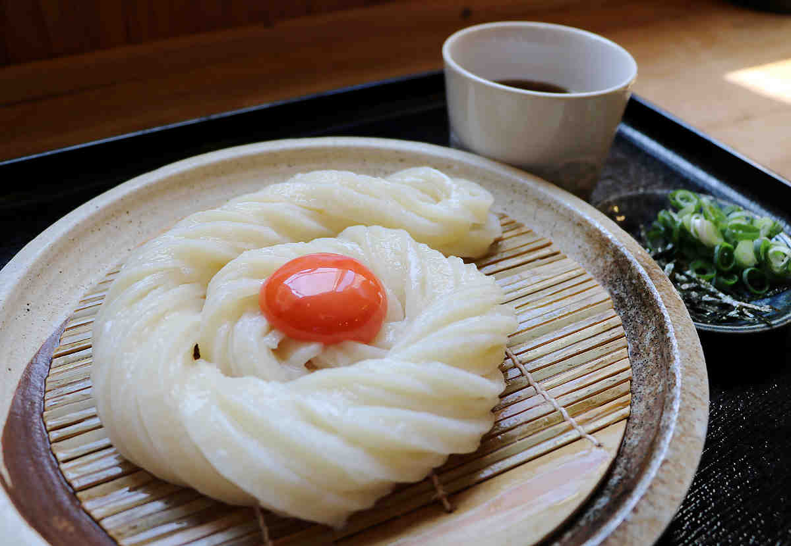

香川県には、日本一のうどんがたくさんあります。
このページでは、おすすめのうどん屋さんを3か所紹介します。

住所： 香川県観音寺市古川町273-1
営業時間： 10:00〜15:00(平日) 9:00〜15:00(休日)
電話番号： 070-3131-1627
特徴：
お昼の14時ごろでもこの大行列…。
でも、その理由は食べたら分かります。
麺は常に打ち立て、切り立て、茹でたての
こだわりの出来たて麺。
すすった時の喉越しと、小麦の風味、滑りとコシも最高です。
名物はスクリューうどん！！！
定休日：
木曜日、金曜日
アクセス：
最寄り駅；本山駅から約2.4km 徒歩で約29分
最寄りバス停；吉岡吉川 から約259m 徒歩で約3分
住所： 香川県高松市多賀町1-6-7
営業時間： 6:00〜18:00
電話番号： 087-862-4705
特徴：
釜バターうどん発祥の店として知られる人気店。
釜から上がって10分以上経ったうどんは
出さないという徹底ぶりで、常に出来たてを提供。
卵とバターを絡めたカルボナーラ風の名物「釜バターうどん」は、
濃厚ながらも食べやすい味わいで多くのファンを持つ。
麺はコシが強く、もちもちとした食感が特徴。
定休日：
元日（1月1日）のみ、年中無休
アクセス：
最寄り駅；ことでん瓦町駅から約550m 徒歩で約7分
最寄り駅；ことでん花園駅から約310m 徒歩で約4分
住所： 香川県高松市牟礼町牟礼2694-1
営業時間： 9:00〜15:00(麺切れ次第終了)
電話番号： 087-813-6988
特徴：
九州産小麦を100％使用し、打ちたて茹でたてにこだわる
今までにない新食感の「むにゅもち麺」が話題の人気店。
伊吹いりこや利尻昆布を使った上品な出汁と、
注文を受けてから揚げる出来たての天ぷらも絶品。
特にサイドメニューの「はも天」は外せない一品。
定休日：
毎週木曜日、第2・第4水曜日
アクセス：
最寄り駅；ことでん八栗駅から徒歩約5分